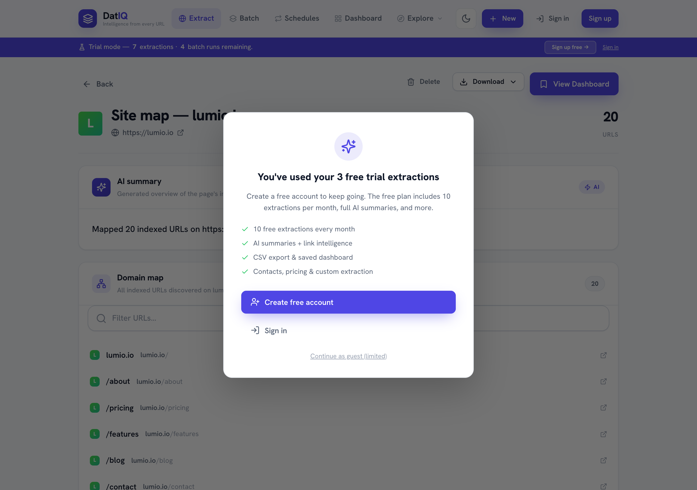

Section 4
What you can extract
Below the input box is "What do you want to extract?" with a row of intent chips.
Below the input box is "What do you want to extract?" with a row of intent chips. Pick one before you extract:
| Intent | What you get |
|---|---|
| AI summary | A plain-language overview of the page, plus its heading outline and links. |
| Find contacts | Leadership names, role titles, and any contact emails the page exposes. |
| Scrape pricing | Structured pricing tiers and plan details from a pricing page. |
| Map site | A list of indexed URLs across the whole domain — useful for SEO and site audits. |
| Custom… | Describe any field in plain English and DatIQ extracts just that. |
Advanced options (the link under the chips) let you fine-tune a run — for example, asking DatIQ to render JavaScript-heavy pages before reading them.
When you choose Map site, the Preview shows the discovered URLs grouped for easy scanning:
